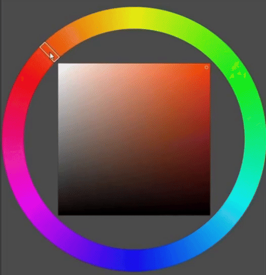

Red is one of the primary colors that the human eye has evolved to be able see. The color red is as core to our understanding of the world as our sense of smell. Humans have long connected and related colours to aspects of their environments. They used it to express emotions, observe the climate, describe violence—color has found its way into language in all kinds of ways. Red of all the colors evokes the most emotions: passion, love, anger—and to me that’s what makes it the best color.
Cadmium
Pink
Carmine